Arte y Diseño Digital
Objetivos
- Formar Diseñadores calificados para abordar las necesidades de todo tipo de requerimiento en el universo del diseño y el arte digital.
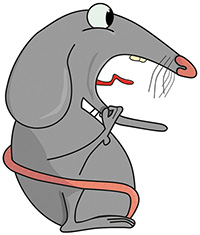- Serás capaz de crear y producir proyectos multimediales. Cine, video, sonido, fotografía, diseño gráfico, desarrollo web, animación, motion graphics, mapping, diseño y maquetado 3D y programación de aplicaciones interactivas.
- Diseño 3D (rendering), arte electrónico (Motion graphics).
- Podrás participar en proyectos de investigación vinculados a las artes multimediales.
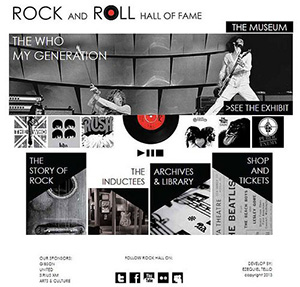- Sabrás capacitar para la producción de nuevos tipos de obras digitales concebidas a partir de instrumentos recientes basadas en las potencialidades de la informática y que comprenden el uso de textos gráficos, imágenes, sonido, música y animación, resignificados por características propias.
Qué se estudia
- Manejo de programas y lenguajes de programación para el desarrollo de sitios web. HTML5. Javascript. CSS3. Photoshop. llustrator. Anime Studio. Maya. 3D Studio Max. After Effects. Premier. Unity. Action Script 3. Animación 2D. Animación 3D. Stop motion. Técnicas mixtas de video y 3DFX y Motion Graphics.
- Aplicaciones Móviles. Marketing Digital. Diseño UX. Análisis de Datos. Creación de Juegos Online. Creación de Contenido y Producción de Videos Web. Maqueta en HTML5 / CSS3. Ejecución de Campañas de Marketing Digital. Diseño Gráfico. Producción y Realización Audiovisual. Posproducción de Sonido y Musicalización. Efectos Visuales. Publicidad. Realidad virtual, Game Design y Concept Art. Juegos para PC, iPhone, iPad, Android, Wii, Xbox 360 y PlayStation. Juegos para Facebook y otras redes sociales. Diseño Interactivo para Web y Aplicaciones para Tabletas y Teléfonos Inteligentes.
- Diseño y Representación Gráfica. Edición de Video. Inteligencia Artificial. Pre-producción. Montaje y Postproducción. Técnicas de Ilustración Digital.
Perfil del Egresado
El Licenciado en Arte y Diseño Digital que el presente plan de estudios tiende a formar será un profesional idóneo capacitado con conocimientos para:
Diseño web
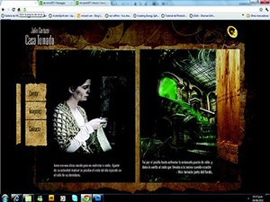- Sitios Web y Aplicaciones Móviles, Marketing Digital, Diseño UX, Análisis de Datos, Creación de Contenido y Producción de Videos Web.
Creación Artística Multimedial
- Aplicar conocimientos de distintas áreas técnicas y creativas combinando cine, video, diseño gráfico, sonido, fotografía, desarrollo web, animación, motion graphics, mapping, 3D, y programación de aplicaciones interactivas. Diseño 3D, Arte Electrónico.
- Analizar, experimentar y obtener un manejo eficaz de las tecnologías involucradas en la producción de obras digitales, aprendiendo dentro de contexto de experimentación e intercambio junto a los mejores profesores del tema, permitiéndole tener sólidos conocimientos del lenguaje audiovisual, respondiendo a la últimas tendencias y vanguardias de la comunicación visual.
- Formación para la investigación en los campos de conocimiento involucrados en las artes multimediales.
Postproducción audiovisual y efectos especiales
- Tradicionales y digitales; para espectáculos; periódicos y noticieros; organismos gubernamentales etc.
- Manejar programación para su aplicación en internet, las redes informáticas y artes escénicas.
- Ilustración digital. Retoque fotográfico.
- Efectos visuales. Edición digital para TV y video.
Diseño de Animación
- Además de concebir tu propia estética artística obtendrás conocimientos en técnicas y software Guión.
- Pre-producción, montaje y postproducción.
- Animación 2D, Animación 3D, Stop motion.
- Técnicas mixtas de video y 3D, FX y Motion Graphics, Ilustración digital. Captura de Movimiento.
- Diseño y Representación. Gráfica, Marketing Digital.
Diseño de VideoJuegos
Abarcando todo el universo involucrado en la creación de simuladores virtuales y videojuegos. Concept art, planificación.
- Diseño y modelado de animación 2D y 3D, manipulación de imagen y sonido.
- Simular entornos virtuales, game design, programación y testeo, inteligencia artificial, realidad virtual, captura de movimiento.
- Juegos para PC, iPhone, iPad, Android, Wii, Xbox 360 y PlayStation.
- Juegos para Facebook y otras redes sociales.
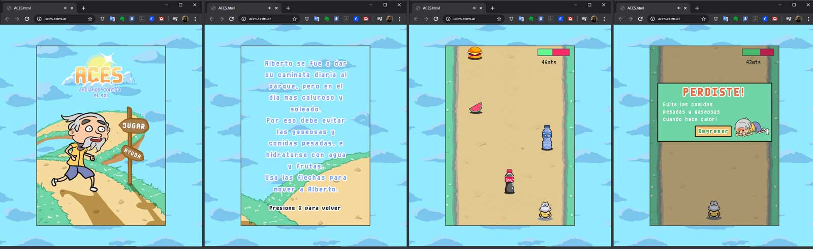- Creación de escenarios múltiples e historias complejas.
- >Diseño interactivo para web y aplicaciones para tabletas y teléfonos inteligentes
Alcances del título en Licenciado en Arte y Diseño Digital
- Diseño Web
- Diseño Multimedial
- Producciones audiovisuales, Efectos especiales y postproducción.
- Dibujo y animación
- Operación de Motion Graphics
- Videojuegos
Ámbito Laboral
- Productoras de cine y TV.
- Empresas desarrolladoras de sitios web tabletas, celulares y videojuegos.
- Productoras cinematográficas; canales de TV.
- Agencias de publicidad transmedia. Estudios de diseño gráfico.
- Empresas de postproducción audiovisual y efectos especiales.
- Empresas realizadoras de animación.
- Editoriales digitales; empresas de tecnología y espectáculos; periódicos y noticieros; organismos gubernamentales.
Plan de estudios
CICLO DE FORMACIÓN BÁSICA
PRIMER AÑO – Resolución Rectoral Nº 309/12 Bis
Contenidos mínimos de las asignaturas:
Plástica y Visión I
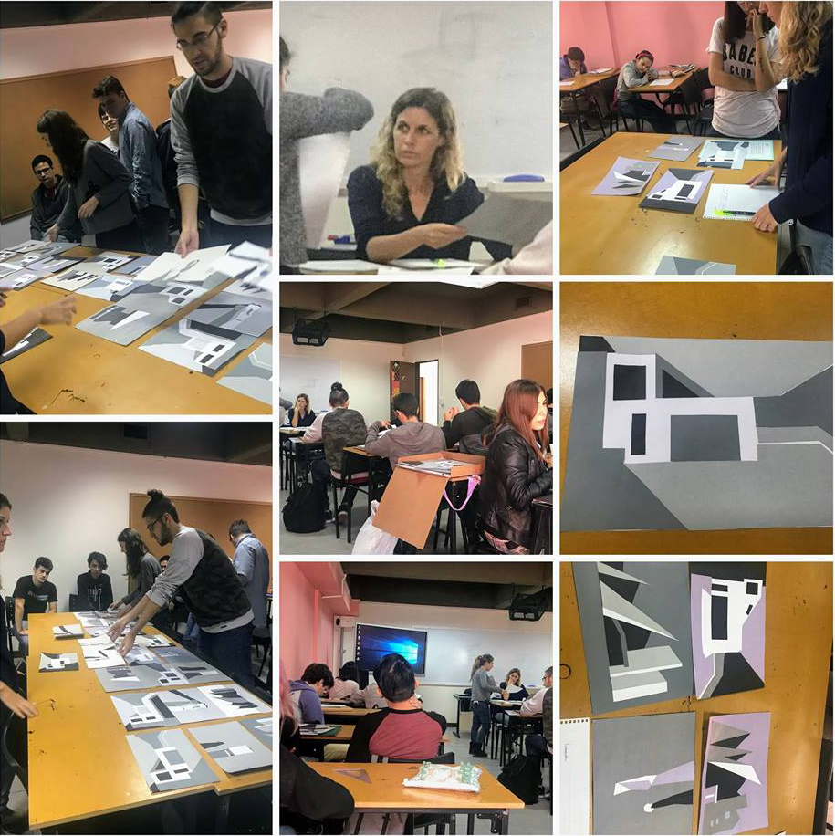Fundamentos visuales. Forma y color. Círculo cromático tradicional y círculo cromático generativo. Paletas de colores armónicos. Intervalos de colores análogos, adyacentes, tríadas, complementarios. Temperatura del color, gamas frías, cálidas y quebradas. Estructura. Profundidad y altura en el plano. Ritmo y recorrido. Unidades compositivas: textura, trama y retícula. Manejo de escala, espacio, y ritmo. Estudio de la reversibilidad y los espacios ambiguos en la relación figura - fondo. La forma. Definiciones: lo interno y lo externo. Leyes de la percepción visual. Representación, abstracción y simbolismo. Las sensaciones visuales.
Tecnología Digital I
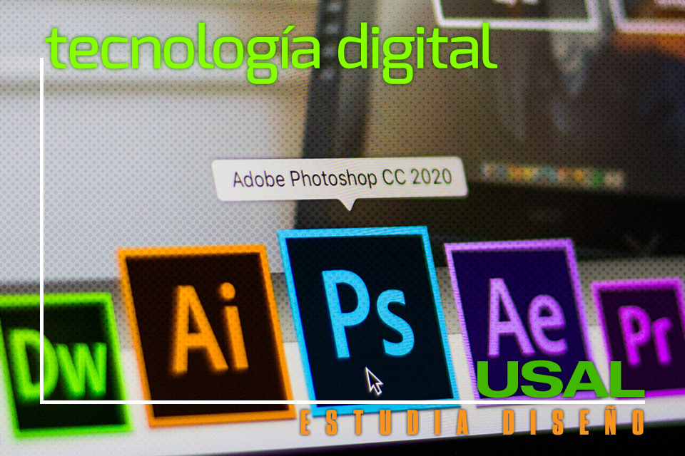Sistema Windows y Mac diferencias y similitudes. Introducción a Photoshop. Introducción a illustrator. Área de trabajo, paneles, herramientas, configuración y uso de accesos rápidos. Integración entre Illustrator y Photoshop. Exportación web.
Historia del arte y del diseño I
Arte primitivo / prehistórico. Origen e historia del alfabeto. Introducción a la historia del arte y del diseño. Rito, mito y magia. Los primeros símbolos: origen y motivación. Roma y su imperio, imperio bizantino y el arte paleocristiano. El sistema feudal, transformaciones en la estructura social, desarrollo comercial y urbano. El sentimiento religioso. Monasterios y bibliotecas eclesiásticas. El manuscrito medieval. Humanismo. Nuevas concepciones del espacio y el tiempo. Cambios en los modos de representación. Innovaciones artísticas. Experiencia visual y sociedad en el Quattrocento. El libro. Gutenberg y sus tipos móviles. La xilografía. Los primeros tipógrafos y editores. Cultura popular y cultura masiva. Francia: barroco y clasicismo. El tiempo objetivado y la historicidad. Rococó y decadencia del mundo cortesano. El neoclasicismo. Revolución francesa. Alianza arte-ciencia-industria. Cultura impresa. Nuevas modalidades de producción. Revolución industrial, ciencia e industria. Romanticismo histórico. El realismo y la nueva temática social. La caricatura y medios de difusión masiva. Daumier, Doré y Blake. Impresionismo: la pintura de lo instantáneo. Arts&Crafts y post impresionismo.
Lenguaje y Comunicación Visual I
Reconocer los elementos organizadores del lenguaje visual en sus aspectos sintácticos considerando las variables espaciales y contextuales y dimensión comunicacional de la publicidad y el diseño. Integrar la imaginación, las sensaciones, emociones, pensamientos e ideas como componentes fundamentales de las producciones visuales en productos diseñados. Estructura de los mensajes visuales. Factores de composición ocultos. Peso compositivo. Síntesis compositiva. Los mensajes visuales. Factores de composición ocultos. Reconocimiento de diferentes estructuras organizativas de los elementos visuales. Información y persuasión. El signo. La percepción como acto cognitivo. El proceso de semiosis. La retórica de la imagen.
Filosofía
Antropología filosófica. Definición de filosofía como ciencia que estudia la realidad a la luz de las primeras y últimas causas. La realidad, lo que es o el ser como objeto de la filosofía. Diferencia y relación con el conocimiento científico-causal. El hombre como unidad alma-cuerpo. Dimensión física y neurovegetativa. Dimensión sensible o animal del hombre. Conocimiento sensible o sentidos externos e internos. Afectividad sensible. Trascendencia del hombre por su inteligencia: capacidad abstractiva. Distinción de imagen y concepto. Trascendencia del hombre por su inteligencia: capacidad iudicativa. Distinción entre juicio verdadero y falso. Trascendencia del hombre por su inteligencia: capacidad discursiva. El razonamiento y los principios de la lógica como fundamento del conocimiento vulgar y científico. El razonamiento falso o sofisma. La afectividad espiritual o voluntad libre. Relación y distinción con las emociones sensibles. La inclinación y búsqueda del bien. Inclinación al bien, amor al bien, transformación en el bien. La persona humana como substancia individual de naturaleza espiritual. Unidad de esencia o naturaleza y diversidad de individuos. La referencia de todas las ciencias al bien de la persona humana. En toda ciencia subyace la noción de persona humana. Persona y sociedad. El bien común como fin de la sociedad. La persona humana como centro de la sociedad. La autoridad como promotora del bien común. Los extremos del modelo individualista y colectivista.
Inglés Técnico
Términos en idioma inglés de temas específicos relacionados con la carrera. Tiempos verbales. Preposiciones. Elementos esenciales de comunicación como escribir cartas (postulaciones de trabajo, CVs, faxes, e-mails, solicitar información, organizar reuniones), llamadas telefónicas, brindar sugerencias y realizar pedidos/ofrecimientos y presentaciones de información.
Taller de Arte y Diseño Digital I
Nociones de metodología proyectual de la imagen. Constituyentes y configurantes del espacio visual. Expresión en dos dimensiones. Dibujo esquemático. Los rasgos "pertinentes". Pictograma. Los sistemas de signos. Tipologías editoriales y géneros discursivos. Estructuración del campo visual. Relación texto-imagen. Representación. Abstracción y Figuración. Síntesis e iconicidad. Estructura del espacio gráfico. Relato visual. Sistemas gráficos cinéticos digitales. Arquitectura de la información. Introducción a la arquitectura de la información.
Audiovisión I
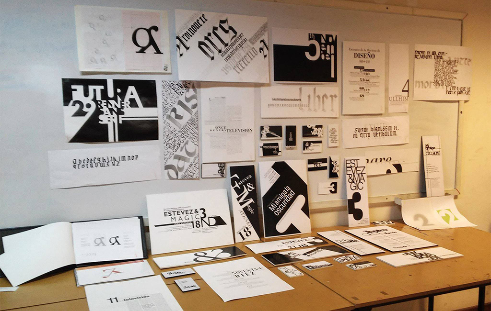El lenguaje y las técnicas audiovisuales. Digital vs análogo. Idea, proyecto y guión. Puntos de giro, géneros. Videoarte. Tecnologías de producción, soporte y reproducción. La audiovisión. Composición del plano. Montaje. Sonido y montaje. Música y montaje. Tecnología de la imagen y el sonido. Tecnología digital. Grabación y digitalización del sonido. Micrófonos. Tipos de cables y conexiones. Postproducción de sonido. Acusmática. Rango dinámico. Profundidad de campo. Temperatura color. Composición digital. Animación. Retoque digital. Animación computada. Introducción a la composición en After Effects. Herramientas de enmascarado. Creación de vectores en movimiento. Customización y animación de efectos.
Tipografía I
Signo tipográfico en su multidimensionalidad: como signo, como símbolo y como elemento sistémico. Utilización de la tipografía en la práctica del diseño. Elementos básicos de configuración del signo tipográfico (forma/ contraforma, estructura, cuerpo, clasificación tipológica, variables, etc.) Y de articulación entre signos (interletra, interpalabra, párrafo, etc.). El concepto tipológico de “fuente tipográfica”. El manejo del espacio tipográfico. Niveles de lectura y exploración elemental de la puesta en página a través de la óptica tipográfica.
SEGUNDO AÑO
Total Horas Ciclo de Formación Básica: 1386
Contenidos mínimos de las asignaturas:
Plástica y Visión II
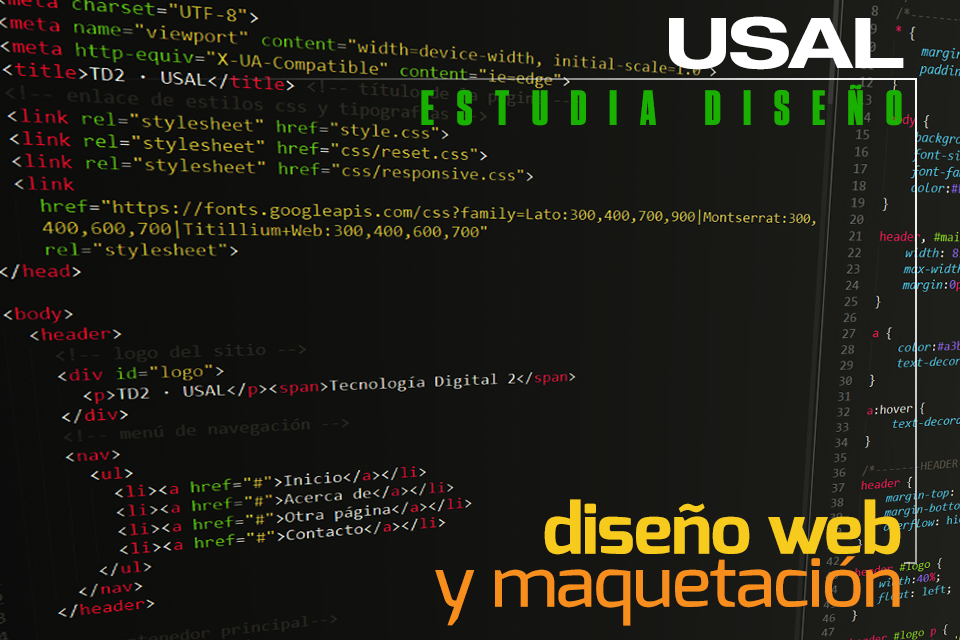Técnicas graficas. Manejo eficiente de los atributos de la forma para la construcción de relatos visuales. Composición compleja del espacio gráfico bidimensional. Leyes gestálticas. Propuestas cromáticas utilizando claves lumínicas y cromáticas diversas que permitan verificar la posibilidad de estructuración y significado por medio de color. Síntesis | Lenguaje | Signo: síntesis formal y utilización de lenguaje. La buena forma. Organización del campo gráfico - secuencia fotográfica y composición compresión de la estructura de la imagen. Articulación texto imagen. Concepto de serie.
Tecnología Digital II
Adobe Indesing - conceptos básicos. Características principales. Rotación de páginas y pliegos sustitución de elementos en plantillas. Párrafos y áreas de texto. Anidación, agrupación y bloqueo de objetos. HTML.
Historia del Arte y del Diseño II
Vanguardias del siglo xx: fauvismo/cubismo. Expresionismo/futurismo. Dadaísmo/surrealismo. Constructivismo Ruso/Suprematismo/De Stijl. Bauhaus. Modernismo pictórico. Guerras y posguerras. Diseño en estados unidos. La escuela de NY. El pop. Escuela de ULM. El estilo internacional. Imagen conceptual. Posmodernidad: crisis de las premisas de la modernidad. Fragmentación y eclecticismo. Revival. Cita y parodia. Intertextualidad. Deconstrucción. Cuestionamiento de las normas. Diseño digital. Preocupaciones actuales. Tendencias. El Instituto Torcuato Di Tella y su departamento de diseño gráfico. New Wave 80s y Deconstrucción 90s. El diseño contemporáneo.
Introducción al Marketing
Introducción a la estadística aplicada, investigación de mercado, canales de distribución, comportamiento del consumidor, publicidad, planeamiento estratégico de negocios, marketing de pymes de diseño. Análisis de productos. Desarrollo profesional. Creatividad e innovación. Negocios de diseño (tendencias y mercados). Administración. Técnicas de investigación relaciones públicas (diseño y empresa). Gestión empresarial.
Teología
Antropología teológica. Teología como ciencia que estudia a dios y las demás realidades a la luz de la razón ilustrada por la revelación. Distinción entre revelación y fe. Distinción entre revelación formal y revelación virtual (teología). Conocimiento racional de dios a partir de la causalidad y la analogía. Dios se revela a sí mismo: unidad de naturaleza y trinidad de personas. La creación del mundo espiritual, el mundo material y el hombre. La caída original. Ruptura del hombre con Dios, con los demás y consigo mismo. Secuelas de ignorancia, malicia y concupiscencia. La persona de cristo y el misterio de la encarnación: Verdadero Dios y Verdadero Hombre nacido de María. Cristo por su pasión, muerte y resurrección borró nuestros pecados, nos devolvió la gracia de dios y nos hace herederos de la vida eterna. El seguimiento de cristo como muerte al pecado y resurrección a la vida divina. La unión con dios por la fe, la esperanza y la caridad. La santificación o participación objetiva de la gracia de cristo por los siete sacramentos. El sacramento de la reconciliación. El sacramento de la eucaristía. Sacrificio, presencia y comunión. Sentido y el lugar que ocupa la oración en la vida cristiana. La lectura espiritual. La meditación. La contemplación. La iglesia peregrina, purificante y el reino de dios.
Metodología de la investigación aplicada al diseño
Relaciones entre diseño y ciencia. El diseño como disciplina. Acercamiento al análisis de procesos de diseño. Características fundamentales y casos ejemplares. El diseño como configurador del mundo artificial. Artefactos de interés para la acción del diseño. El giro semántico de Klaus Krippendorff. Métodos para crear espacios de futuros posibles: brainstorming, reframing, combinatoria.
Audiovisión II
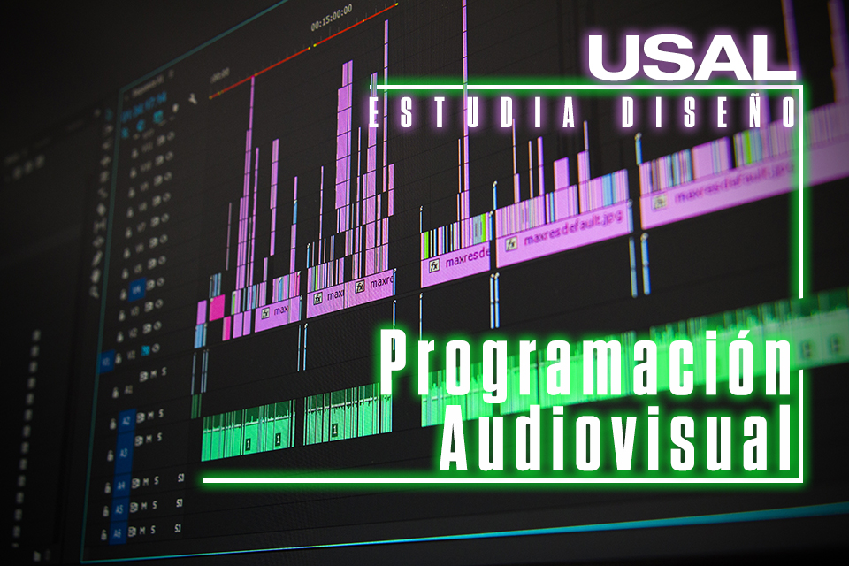Señales de video. Codificadores. Decodificadores. Formatos de compresión. Archivo “.raw”. Videos de alta velocidad. Postproducción de sonido. Musicalización, armado de bandas sonoras. Modos de composición. Sistema de digitalización. Estéticas lumínicas contemporáneas. Estereoscopía 3D. Formatos de visualización. Colorimetría corrección por zonas altas/medias/bajas key. Resolución de composiciones complejas. Soportes digitales de grabación tapes digitales. Introducción a la edición en Adobe Premiere.
Taller de Arte y Diseño Digital II
Organización de la información, funcionamiento y presentación. Los nuevos procesos de mediación: del texto al hipertexto. Diseño de interfaces. Construcción de sitios web. Conceptos de sistema. El plan ordenador. Organización de los espacios. Articulación de elementos gráficos, tipográficos, fotográficos en un plan visual. Técnicas de procesamiento de imágenes. Diseño de información en los hipermedios. Elementos para el diseño multimedia. Conceptos de usabilidad en contextos digitales. Interfaces gráficas y metáforas. HTML.
Imagen y Composición Digital I
Tratamiento de la imagen. Técnica de montajes y collage digitales. Resolución y tamaño de archivo. Herramientas de transformación y movimiento de capas. Volumen. Composición artística. Perspectiva atmosférica. Línea de acción y de equilibrio. Animación. Determinación de las líneas de acción y de equilibrio. Dibujo de medios e intermedios. Animación de movimientos empleando escalas.
Diseño Multimedial I
El diseño multimedial desde el diseño de información e interacción. La interfaz como utensilio en el diseño para los hipermedios. Diseño de interfases y Look & Feel. Prototipos web de baja, intermedia y alta fidelidad. Sitios y páginas web: características. Diseño de la interfaz gráfica de usuario. Conceptos fundamentales para el diseño de interfaces gráficas web. Usabilidad, prestaciones, convenciones y limitaciones culturales.
CICLO DE FORMACIÓN SUPERIOR
TERCER AÑO
Total Horas: 2016
TÍTULO INTERMEDIO: DISEÑADOR DE ARTE Y DISEÑO DIGITAL
Contenidos mínimos de las asignaturas:
Taller de Arte y Diseño Digital III
Lenguaje y dramaturgia: composición, ejes de acción, esquemas coreográficos bidimensionales y tridimensionales. Modelado bidimensional, animación vectorial, maquetación y armado de páginas elementos de la banda sonora. Utilización de etiquetas: títulos, párrafos, citas, tablas, hipervínculos, imagen, saltos de línea, anclas, listas, formularios. Estructuras narrativas. Tiempo y movimiento. Fotografía, animación y cinematografía: historia paralela y conceptualización diacrítica. Gráfica Cinética. Stop Motion y Rotoscopía. Videoarte. Sistemas de representación del espacio. Recorrido visual como recorrido espacial. Animación pixelar. Edición y posproducción de video. Animación e interactividad.
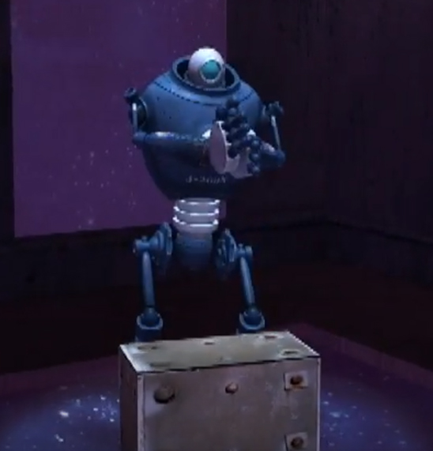Programación audiovisual I
Montaje/edición como organización del material para encontrar una estructura dramática. Principio de la división de una escena en planos. El movimiento de los sujetos u objetos como factor de corte. El uso del movimiento para resolver problemas. Efecto Kulechov. El uso de tamaños de planos. La repetición de planos. El armado de una secuencia de diálogos. Movimientos de cámara, cambio de zona o trayectorias y zona de cuadro. Introducción a la edición en Final Cut Pro. Herramientas básicas. Propiedades del timeline y el clip. Sincronismo entre imagen y sonido. Configuración de salida de proyectos en diferentes formatos.
Diseño 3D I
Introducción a la utilización del Soft 3D. Áreas de animación, interfaz y su utilidad en ámbitos de animación y producción animada. Preproducción. Interpretar los principios fundamentales y las distintas técnicas de creación y edición de la geometría 3d y desarrollar criterios para su aplicación. Modificadores y aspectos variados para la deformación de objetos animados. Técnicas de modelado poligonal para la elaboración de cualquier elemento 3d, Subdivisión Surface, construcción cualquier clase de elementos “Hard Surface”. Materiales y texturizado, mapa de coordenadas de texturas, iluminación, cámaras y representar una escena 3d. Animación, por keyframe manejar claves y curvas de animación mediante el Dope Sheet y el curve editor, constraint, simulaciones físicas y partículas. Render para la visualización final del video.
Animación y edición multimedia I
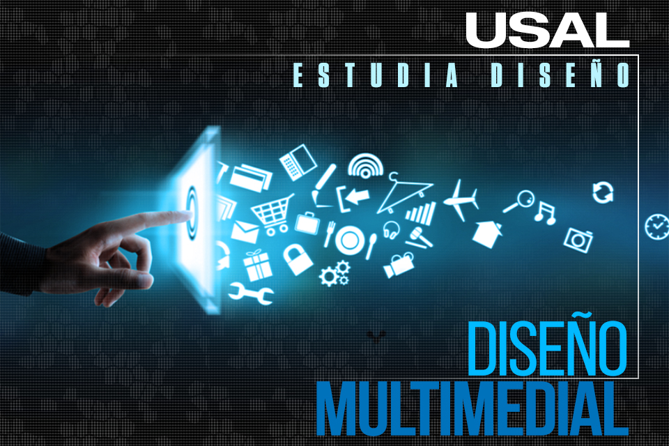Introducción al mundo de la animación”. Conceptos de la animación digital. Guión para animación. Preproducción. Producción. Postproducción. Texturizaciones. Sombras y luces. Puesta en escena (Staging). Dibujo sólido (Solid Drawing). Fondos vectoriales y de imágenes. Overlays y Underlays. Técnica Cut-Out o recortables. Introducción al Adobe Encore. Realización de menús interactivos. Botones, links, transiciones. Aplicación de subtítulos y audios estéreo y 5.1. Selección de escenas y extras.
Diseño y Desarrollo de Videojuegos I
Dibujo artístico. Diseño vectorial. Tecnología del videojuego. Redes y entornos. Tratamiento digital de imágenes. Fundamentos de las bases de datos. Programación orientada a objetos. Comunicación audiovisual. Diseño de Videojuegos: guión y storyboarding. Animaciones y scripting modelado 3d. Diseño y desarrollo de Videojuegos Web.
Arte interactivo I
Introducción a la lógica. La noción de razonamiento. Problemas lógicos en programación. Plataformas multimedia. Clasificación de redes. Lenguajes e hipertextos. Bloques, nodos, lexías. El concepto de hipermedia. El medio digital. Diseño de interfaces. Diseño de navegación. La estructura no-lineal y los procesos interactivos. Interfaz física, interfaz virtual. Diseño de interfaces. HCI (Human Computer Interaction).
Imagen y Composición Digital II
El color en los medios digitales. Ejercicios de animación, manejo del tiempo. Organización y planificación previa a la animación. Física de los objetos (peso, deformación, etc.). Storyboards. Layouts. Matte Painting (concepto, desarrollo, aplicación). Modos de fusión. Herramientas de corrección y retoque digital filtros. Estereoscopia 3D.
Ética
Definición de la ética como ciencia de los actos humanos en orden al fin. Las nociones de bien, perfección, fin y felicidad. Acto humano inteligente y voluntario. El involuntario por violencia, miedo grave, pasión violenta e ignorancia. Análisis del acto humano bajo el aspecto moral: el objeto de la acción. Análisis del acto humano bajo el aspecto moral: el fin o intencionalidad de la acción. Análisis del acto humano bajo el aspecto moral: las circunstancias del acto humano como agravante o atenuante. Quien, a quién, para qué, cómo, tiempo, lugar. Principios del acto humano: los hábitos, definición y clasificación en virtudes y vicios. La ley como ordenamiento de la razón en orden al bien común promulgada por la autoridad. Ley eterna, ley natural, ley positiva o humana. La fuerza de la ley humana fundada en el derecho natural o DDHH. Análisis de casos de la carrera.
CUARTO AÑO
Total Horas Ciclo de Formación Superior: 1260
TOTAL HORAS DE LA CARRERA: 2646
TÍTULO: LICENCIADO EN ARTE Y DISEÑO DIGITAL
Contenidos mínimos de las asignaturas:
Taller de Arte y Diseño Digital IV
Procesos de desmaterialización en los medios contemporáneos. El programa como motor. Soportes y formatos en el arte interactivo. Espacio, cuerpo e Interfaces. Modulación de la luz. Modulación interior y exterior de la luz. Proyección de imágenes sobre objetos y pantallas no planas. Modelado tridimensional. Teorías del espacio. Propiedades de los sólidos regulares y semiregulares. Modelado tridimensional. Imagen estereoscópica y Holografía. Cine y video estereoscópico. Diseño de Juegos .Escenarios y objetos 2D.. Del juego al videojuego. De objeto a personaje. Juegos online. Juegos de desplazamiento y control. Juegos de estrategia.
Programación Audiovisual II
El “tempo dramático”. Elipsis, Resumen, Orden, Duración y Frecuencia. Diferencia entre planos con evolución dramática y planos fijos. La subordinación del corte a la música, Let motiv Elipsis y enlaces con analogías. La Edición Electrónica. Intermedia digital. Métodos y alternativas para el desarrollo de Motion Graphics 3D. Animación de objetos y textos . “Matte Painting 3D”, Efectos Visuales e iluminación. Sistema de huesos para la animación de objetos.
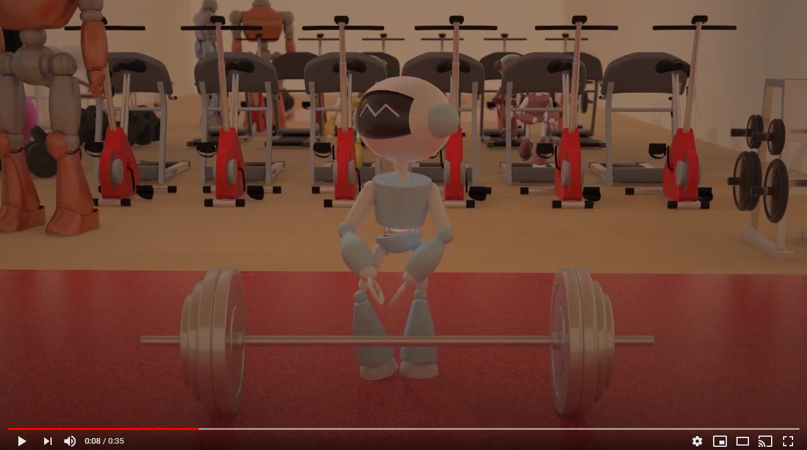Diseño 3D II
Animación de personajes. Principio de animación, timing, anticipación, animación secundaria, staging, entre otros, IK vs FK, Rigging con huesos y su automatización , constraint, expreciones,etc. Rigging y animacion de personajes con Character Studio (Biped), animación paramétrica, animación libre, interacción con objetos como espadas, pelota, entre otros, Herramientas Rigging y animación con CAT. Herramientas básicas de animación facial. Simulaciones físicas para la integración con personajes, Simulaciones físicas basadas en partículas.
Animación y Edición Multimedia II
La actuación del personaje. El audio como inspirador de situaciones. Pixilation y Adobe premiere. Construcción de un cuadrúpedo, animación y acting de un cuadrúpedo. Stop Motion. Creación avanzada de un personaje. Esqueletos Layers de huesos, vectores, riggeo y parentación de huesos. Sincronización labial, Animación de nodos, Acting, Expresiones faciales. Interacción con otro personaje u objeto Efectos de transparencia y blureado, Mascaras. Texturas y animación de colores. Partículas. Post producción y retoque uso de herramientas.
Diseño y Desarrollo de Videojuegos II
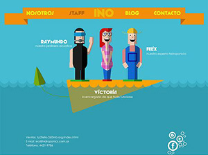Programación Visual para Videojuegos Diseño de Videojuegos: Niveles. Entornos Operativos y Plataformas Audio en el Videojuego. Desarrollo para Dispositivos Móviles. Ingeniería del Conocimiento: Diseño de Pre-producción y Concept Art. Animación 3D Avanzada. Motores Gráficos y Plugins. 3D Avanzado: Personajes y Escenarios. Programación Gráfica. Concept Art: Personajes, Postproducción Digital Middleware: Herramientas de Desarrollo.
Arte Interactivo II
Nociones de metodología proyectual y heurística de la imagen. Técnicas de procesamiento de imágenes. Arte y tecnología. Estructuras narrativas. Fotografía, tiempo y movimiento. Técnicas de representación del movimiento en la imagen fija. Estática y dinámica en el videoarte. Introducción a la topografía de la imagen. Sistemas de representación del espacio. Elementos de tecnología digital de la imagen. Hardware de captura y procesamiento de imágenes. Estado del arte y proyección. Integración con otras tecnologías. Lenguajes visuales y audiovisuales: pintura, fotografía, cine. Imagen. La dimensión histórica de las imágenes. La narración audiovisual. El arte en la era digital. Alternativas para el desarrollo de objetos y texturizado. Capas de modificadores y sus diferentes aplicaciones. Postproducción de los elementos. Ambientación, Rigging, Animación 3D y postproducción.
Cuando te gradúes podrás:
- Desarrollar la creación artística multimedial.
- Analizar, experimentar y manejar eficazmente las tecnologías involucradas en la producción de obras digitales.
- Aplicar conocimientos del lenguaje audiovisual respondiendo a las últimas tendencias y vanguardias de la comunicación visual.
- Trabajar en productoras de cine y TV, empresas desarrolladoras de sitios web y videojuegos.
- Formarte para la investigación en los campos de conocimiento involucrados en las artes multimediales.
- Manejar programación para su aplicación en Internet, las redes informáticas y artes escénicas.
- Simular entornos virtuales, videojuegos, ilustración digital, multimedia escénica e instalaciones.
- Realizar diseño 3D (rendering), arte electrónico (motion graphics), edición para TV, edición de video.